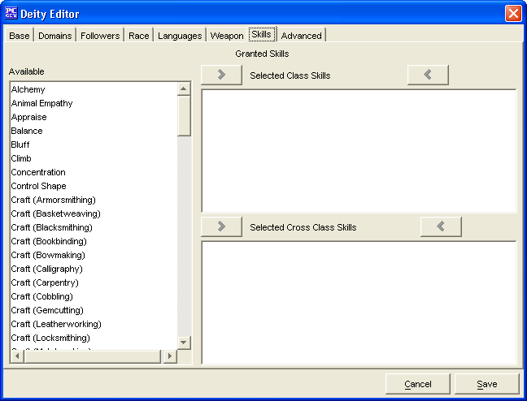

Deity Editor: Skills Tab

The Skills Tab is used to define the skills
granted to followers of the deity.
The three Granted Skills windows,
Available, Selected Class Skills and
Selected Cross Class Skills are used to create a
list of class and cross class skills granted to the deity's
followers.
- The skill names in the Available window are
drawn from whichever sources were loaded into PCGen. (i.e. If you
have SRD and Soveriegn Stone loaded as sources, then skills from
both sources will appear in the window.)
- The Add and Remove buttons
will move the highlighted skill name between the
Available window and whichever
Selected window they are situated next to. Double
clicking has no effect in the skills tab.
The Cancel and Save buttons,
which appear on every tab, are used to either cancel the deity
creation or save it to the customdeities.lst file.